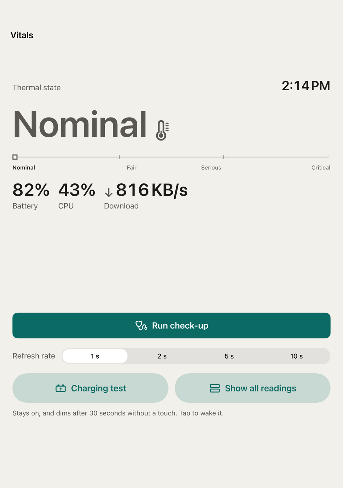
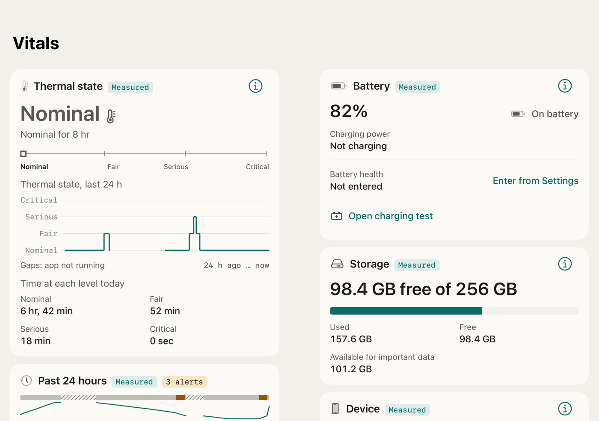
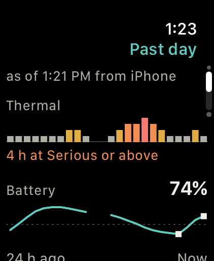
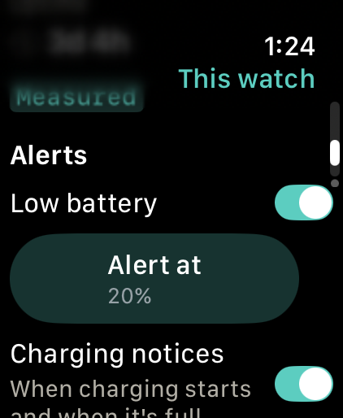
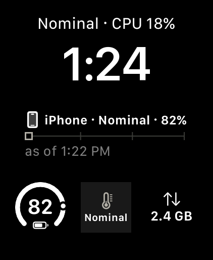
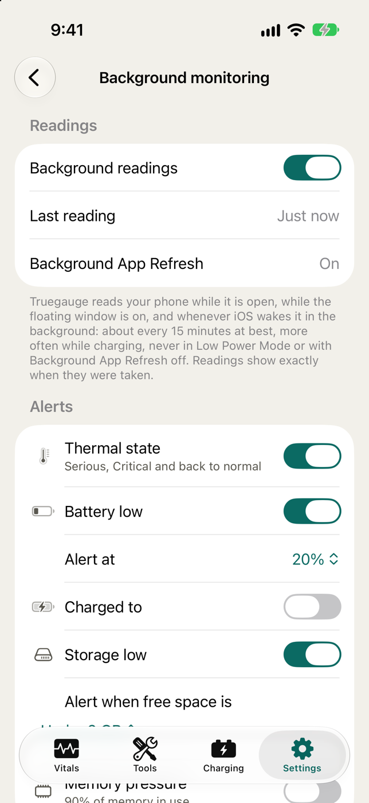
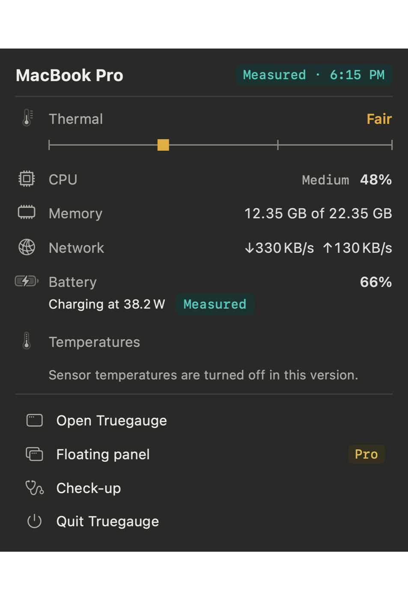
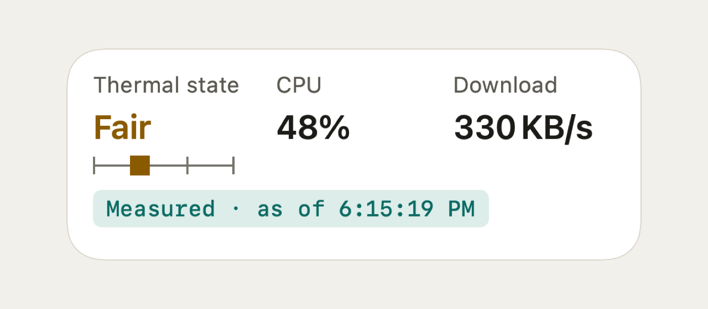
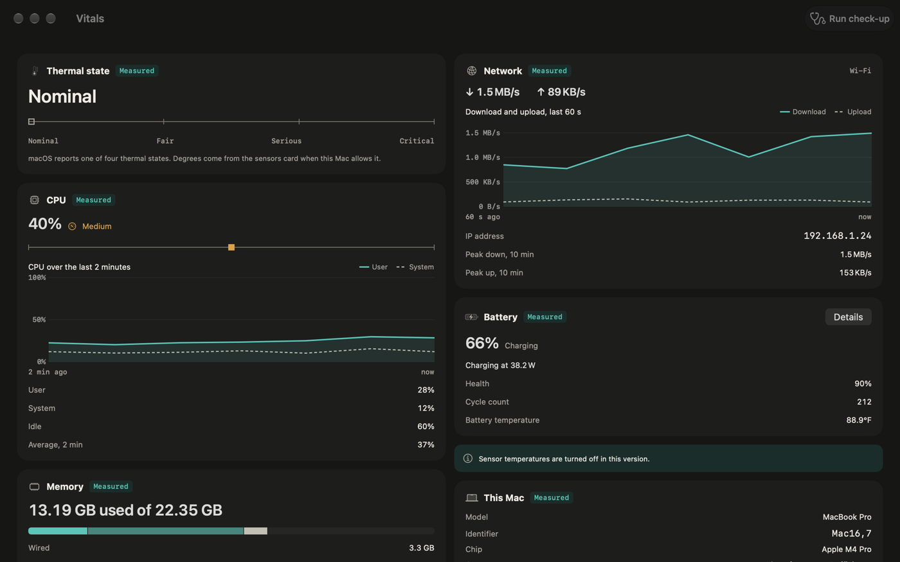

Truegauge
CPU, RAM & Battery · App Store · updated 2026-11-01
What is new
Version 1.2 fits three more screens. On iPhone Duo the phone half folded on a desk becomes a desk gauge: thermal state, battery, CPU and download on the top half, controls on the bottom, dimming after 30 seconds without a touch. Fully open, Vitals, Charging, Day report, Toolbox and Settings run as two panes. On Apple Watch a fourth page draws the phone's last 24 hours of thermal level and battery, the watch posts its own low battery alert at a level you pick (10 to 50 percent), and a Phone thermal complication shows the level word on the face. On a Mac with a touch screen, hit areas grow to 36 points, chart values appear on a tap, and pulling down on Vitals runs the check-up. Captures below are from the 1.2 build with seeded sample readings; the Duo and Mac touch captures come from the simulator and a forced touch layout, not from the hardware.
Facts
- Version
- 1.2 (build 2026110101), built with Xcode 27.1
- Platforms
- iPhone (including iPhone Duo), iPad, Apple Watch, Mac
- Languages
- English (US, UK, Australia, Canada), Spanish (Mexico)
- Price
- Free for every core reading. Pro is a one-time purchase with Family Sharing, no subscription.
- Privacy
- Runs on the device, no account, no analytics. Nothing asks for notification permission until an alert is switched on.
- Accessibility
- VoiceOver labels on every complication and chart, Reduce Motion honoured on the desk gauge and the Mac charts, larger touch targets on touch screens.
- Windows
- Mac touch screen 6 Nov to 6 Dec 2026; Watch past day 23 Nov to 23 Dec 2026; iPhone Duo 6 Nov 2026 to 10 Jan 2027
- Developer
- One developer, Dubai
Screens
Captures of the screens described in the nominations. No marketing frames.









Why now
- Apple unveils groundbreaking MacBook Pro with PROLED XDR display Apple Newsroom, 28 Oct 2026; the first MacBook Pro with a touch screen ships 6 Nov 2026
- Touch on Mac Apple Developer
- If your iPhone or iPad gets too hot or too cold Apple Support, undated